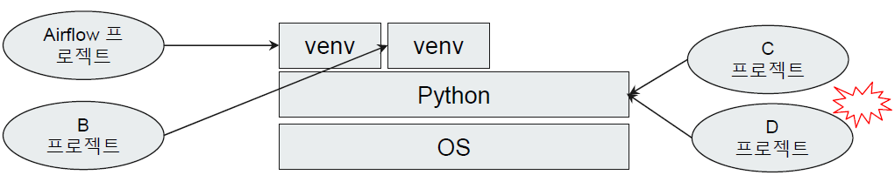
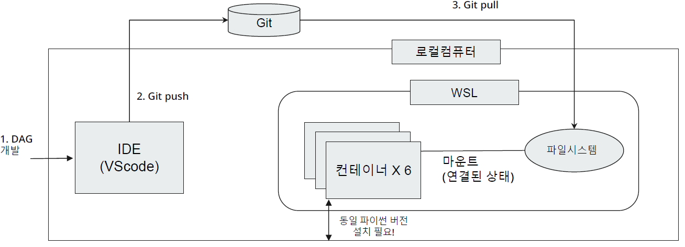

Environment Setting for Airflow
WSL, Docker Installation, Airflow Installation, Development Environment Setting, Python Interpreter Installation, VScode Installation, Git Evnvironment Setting, Airflow Library Installation
Engineering
template
Author
Kwangmin Kim
Published
May 1, 2023
- Airflow 설치 방법은 여러가지가 존재하며 그 중 하나가 도커 설치임
- 도커 컴포즈 (docker compose)를 이용하여 한번에 쉽게 설치 가능
- Docker Compose를 이용하여 Airflow 설치 링크
- docker compose: 여러 개의 도커 컨테이너 설정을 한방에 관리하기 위한 도커 확장 기술로 에어플로우를 설치하기 위한 도커 컨테이너 세팅 내용이 들어있음
- airflow 자체도 여러개의 docker containers로 구성됨
- Docker Compose를 이용하여 Airflow 설치 링크의 Fetching docker-compose.yaml 부터 시작
curl -LfO 'https://airflow.apache.org/docs/apache-airflow/2.6.1/docker-compose.yaml'ls로docker-compose.yaml다운로드됐는지 확인vi *로docker-compose.yaml열어보면 주석처리와 airflow의 설정내용들을 확인할 수 있다.
- Setting the right Airflow user
- directories 만들기:
mkdir -p ./dags ./logs ./plugins ./config - .env 파일 만들기:
echo -e "AIRFLOW_UID=$(id -u)" > .env vi .env:AIRFLOW_UID=1000인 이유는 OS 계정의 uid가 1000이라는 뜻
- directories 만들기:
- Initialize the database
sudo docker compose up airflow-init:sudo반드시 앞에 붙여야함.exited with code 0가 떠야 정상적으로 설치 된 것임
- Running Airflow
- service 띄우기:
sudo docker compose up실행.sudo반드시 앞에 붙여야함. - http 상태가 계속해서 업데이트 되야 airflow가 돌아가고 있는 것임. 계속해서 update되는 http command 닫으면 airflow멈춤. 두번째 터미널 열어서 작업해야함
- 두 번째 터미널 열고
sudo docker ps실행하여 container list 상태 확인. 총 6개 올라와야 정상- airflow-airflow-worker-1
- airflow-airflow-triggerer-1
- airflow-airflow-webserver-1
- airflow-airflow-scheduler-1
- airflow-postgres-1
- airflow-redis-1
- 웹 브라우저 창에
localhost:8080입력하여 airflow service창에 접속- default ID/PW: airflow/airflow
- 웹 브라우저에서 local로 airflow service 접속 원리
- 웹 브라우저는 local PC에 있음
- airflow는 WSL안에 docker container로 실행되고 있음
- 이렇게 2개의 다른 공간이 연결될 수 있는 이유는 WSL은 기본적으로 local PC의 local host IP와 연결이 되어 있음
- 그래서 웹 브라우저에서 local로
localhost:8080라고 입력하면 WSL에서 8080 port를 입력하는 것과 같은 효과가 있기 때문에 local 웹브라우저에서 WSL container로 들어갈 수 있는 것임. - sample DAGs이 만들어져 있는 것을 확인 할 수 있음
- example_bash_operator DAG을 들어가 보면
- Grid: 수행 이력을 보여주는 tab
- DAG 이름 example_bash_operator 옆에 pause toggle를 활성화 시키면 unpaused 됨
- Auto-regresh toggle 활성화 시키면 DAG이 한번 돌아감
- Graph: DAG을 구성하고 있는 tasks를 보여주는 tab. 각 각의 task가 색 별로 상태를 보여주고 있음
- Calendar: 참고할 것
- Task Duration: 참고할 것
- Task Tries: 참고할 것
- Landing Times: 참고할 것
- Gantt: 참고할 것
- Details: 참고할 것
- Code: DAG을 구성하고 있는 python code를 볼 수 있음
- Audit Log: 참고할 것
- Grid: 수행 이력을 보여주는 tab
- service 띄우기:
- CPU: 4Core 이상
- Memory: 16GB (권장-문제없음) / 8GB (최소-약간 버벅 거림)
- WSL에서 다수의 컨테이너 실행시 메모리 점유율 상승할 수 있음
- airflow service창과 WSL 창 닫고 다시 키면 어느 정도 메로리 점유율 낮아짐
- user가 만든 DAG이 airflow까지 전달되는 workflow가 아래와 같이 묘사되어 있다.
- 위의 그림에서 보면 6 containers가 있고 airflow setting 할때
dags,logs,plugins,configdirectories를 만들었는데 모두 airflow containers에 연결되어 있음- mount 의미: directory안에 file을 넣으면 containers가 file을 인식할 수 있음
- user가 만든 dag을 dags directory에 넣으면 airflow container가 dags안에 있는 dag을 인식하여 서비스에 띄어줌
- 개발환경 세팅의 목표
- 로컬 환경에서 만든 dag을 dags directory에 배포하여 containers가 user가 만든 dag을 인식하여 airflow서비스까지 띄우는 것이 목표
- 다시 말해서, 그냥 로컬 환경에서 만든 dag을 dags directory에 배포하면 됨
- Actions
- 로컬 컴퓨터에 python interpreter 설치
- 아무 python version을 설치하면 안되고 airflow containers가 쓰고있는 python version과 일치시켜야 함!
- IDE Tool(VScode) 개발환경 설정
- Github 레파지토리 생성
- 로컬 컴퓨터에 Python Airflow Libraries 설치
- WSL에 Git 설치 및 git pull이 가능한 환경구성
- git repository에 DAG을 만들어 push하여 dags directory에 pull이 되어 dag이 들어가게 하면 됨.
- 로컬 컴퓨터에 python interpreter 설치
- Actions
- 컨테이너에서 사용하는 파이썬 버전 확인
- container안에 들어가기:
sudo docker exec -it {container-name or container-id} 명령어\(\rightarrow\)sudo docker exec -it airflow-airflow-worker-1 bash:-it는 session이 안 끊어지도록 유지해주는 옵션 python -V실행하여 python version 확인 : 현재 나의 python version은Python 3.7.16ctrl D로 exit
- container안에 들어가기:
- 파이썬 인터프리터 다운로드
- 보안상의 업데이트 말곤 기능이 같기 때문에
Python 3.7.16대신Python 3.7.9설치하면 됨
- 보안상의 업데이트 말곤 기능이 같기 때문에
- 로컬 컴퓨터에 파이썬 설치
- conda에 설치하고 싶으면
conda create -n airflow python=3.7.9or - global 환경에 설치하고 싶으면 Windows x86-64 executable installer 다운로드 및 설치
- conda에 설치하고 싶으면
- 컨테이너에서 사용하는 파이썬 버전 확인
- VScode란?
- Microsoft사에서 2015년에 제작, 다양한 언어 개발을 돕는 IDE tool
- Visual Studio 라는 IDE 툴과는 엄연히 다른 툴
- Actions
- VScode 다운로드
- 설치 마법사에서 추가 작업 선택란에 code로 열기 작업을 windows탐색기 파일의 상황에 맞는 메뉴에 추가 선택할 것. programming file을 열때 VScode가 디폴트가 되도록함
- VScode 설치, 파이썬 확장팩 설치
- 프로젝트 생성, 파이썬 가상환경 설정
- VScode가 file이나 directory단위로 관리하는 IDE tool이라 프로젝트 생성 개념이 없음
- windows에 프로젝트 directory하나 만들고 VScode에서 open folder로 열면 그 folder를 최상위 folder로 인식 (project 생성됨)
- python interpreter 설정
- VScode > Terminal > New Terminal > python version 확인
- VScode 다운로드
- 파이썬 가상환경
- 라이브러리 버전 충돌 방지를 위해 설치/사용되는 파이썬 인터프리터 환경을 격리시키는 기술
- 파이썬은 라이브러리 설치 시점에 따라서도 설치되는 버전이 상이한 경우가 많음

가상 환경의 필요성 - python을 global 환경에 설치할 경우 위의 그림처럼 C,D프로젝트가 동시에 진행될 때 둘 중하나의 library version이 차이가 나면 old version의 library 로 진행되는 프로젝트는 에러가 발생함
- 2개의 다른 프로젝트가 같은 python interpreter를 바라보고 library를 설치하기 때문에 종속성 문제가 생김 (library 충돌 발생)
- 그래서 다른 가상환경 venv안에 다른 프로젝트를 할당해서 독립적으로 프로젝트를 진행하는게 일반적임
- python 가상환경 만들기
- conda로 만들 경우 conda 설치 후 만들면 됨. 설치 링크
- python에 있는 가상환경 생성 기능으로 만들 경우
python -m airflow ./venv실행./venvdirectory에 python 설치하고 version 관리하겠다는 의미
- VScode가 python 가상환경 참조하도록 설정
- help>show all commands or
ctrl+shift+p누른후interpreter입력하여 가상환경에 있는 python 클릭
- help>show all commands or
- terminal 에서 가상환경 잘 잡혔는지 확인
- Airflow 라이브러리 설치 대상과 설치 이유
- 설치 대상: 로컬 컴퓨터의 파이썬 가상환경(본인의 경우: airflow)
- Why? Airflow DAG 개발을 위해 Airflow의 python class files 및 라이브러리들이 많기 때문에 필요
- Airflow 라이브러리 설치 가이드
conda activate airflow가상환경으로 들어감pip install "apache-airflow[celery]==2.6.1" --constraint "https://raw.githubusercontent.com/apache/airflow/constraints-2.6.1/constraints-3.7.txt"
- 리눅스에서 파이썬 Airflow 라이브러리 설치시 그 자체로 Airflow 서비스 사용 가능
- 하지만 WSL에서 pip install 명령으로 Airflow를 설치하지 않는 이유?
- pip install 로 Airflow 설치시 저사양의 아키텍처로 설치되며 여러 제약이 존재함 (Task를 한번에 1개씩만 실행 가능 등)
- 그러므로 docker로 설치해야 제약이 없음
1 WSL Installation
2 Docker Installation
3 Airflow Installation
4 Airflow Development Environment Setting
4.1 개발 환경 권장 사양
4.2 개발 환경 workflow
